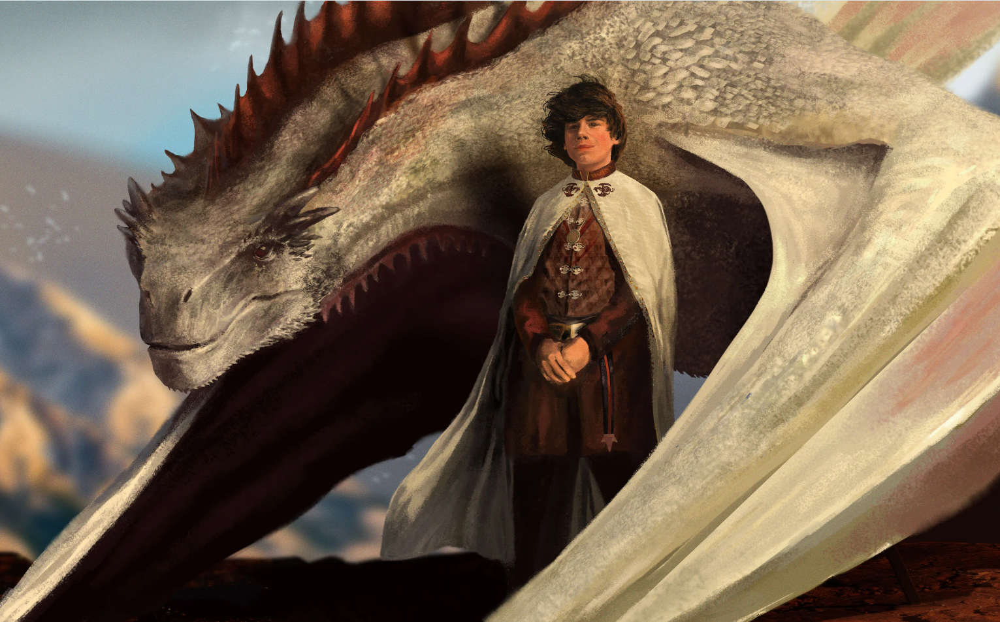
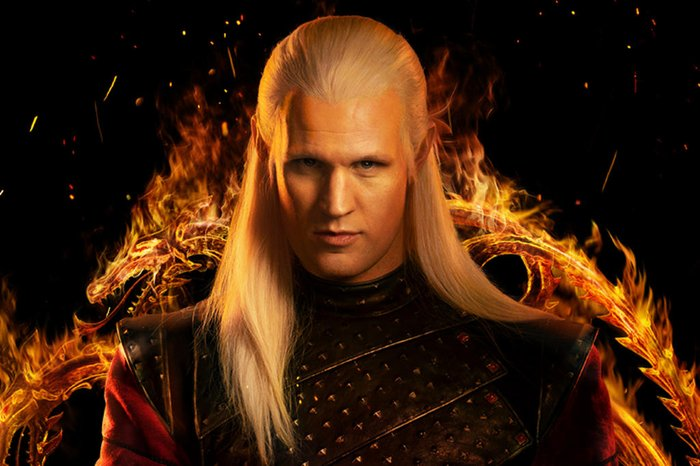
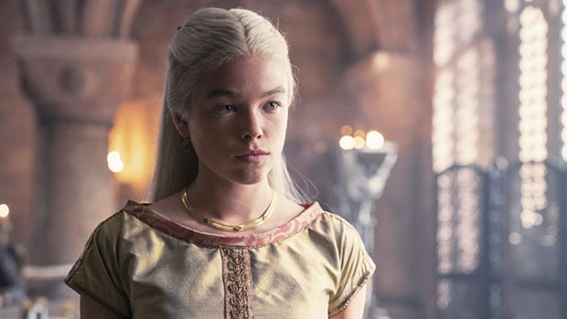
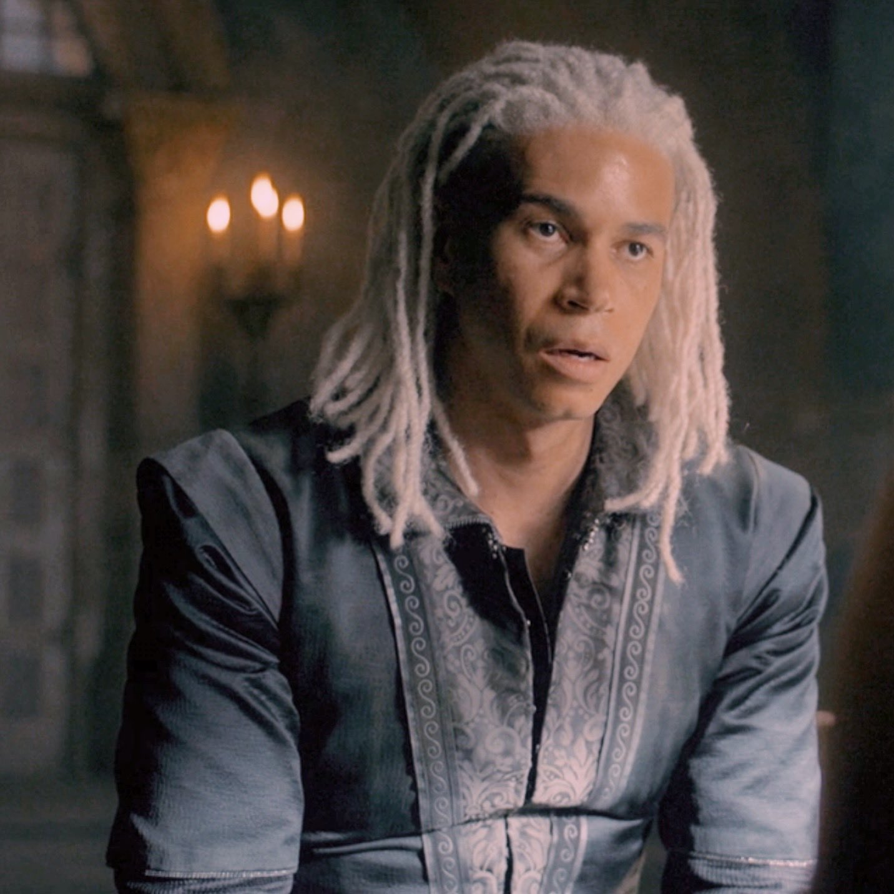
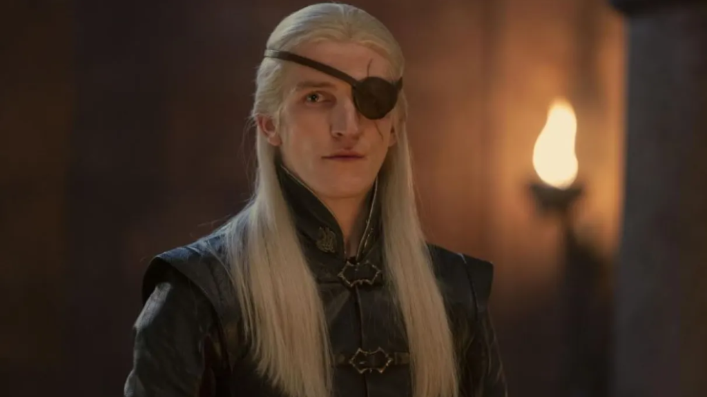

Curiosidades sobre os Personagens
Lucerys Velaryon
Lucerys Velaryon, conhecido como Luke, é o segundo filho de Rhaenyra Targaryen. Ele monta o jovem dragão Arrax. Lucerys é corajoso, mas enfrenta grandes desafios devido às tensões entre as casas Targaryen e Hightower.
Daemon Targaryen
Daemon Targaryen, o "Príncipe Rebelde", é um guerreiro experiente e irmão mais novo do Rei Viserys I. Ele monta o dragão Caraxes, conhecido como "Verme de Sangue", e é uma figura controversa na corte.
Rhaenyra Targaryen
Rhaenyra Targaryen é a filha mais velha do Rei Viserys I e herdeira ao Trono de Ferro. Ela monta Syrax, um dragão que reflete sua força e determinação. Sua reivindicação ao trono é o ponto central da Dança dos Dragões.
Laenor Velaryon
Laenor Velaryon é filho de Corlys Velaryon e Rhaenys Targaryen. Ele monta Seasmoke, um dragão ágil e preparado para batalhas marítimas. Laenor é um aliado estratégico para a Casa Targaryen.
Jacaerys Velaryon

Jacaerys Velaryon, apelidado de Jace, é o filho mais velho de Rhaenyra Targaryen. Ele monta Vermax, um dragão jovem e promissor, e é um líder natural em treinamento.
Aemond Targaryen
Aemond Targaryen, o segundo filho da Rainha Alicent, é conhecido por sua ambição. Ele monta Vhagar, o maior e mais antigo dragão vivo, conquistando respeito e medo por seu poder.